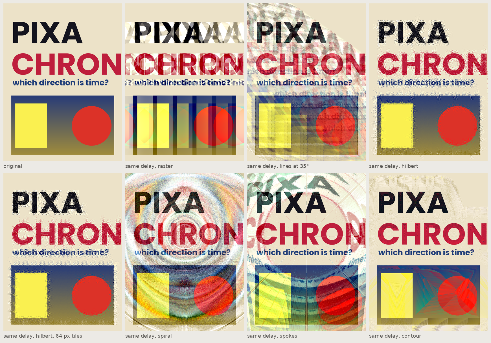

15
pixachron
Audio effects for pictures: unroll the image along a path of your choosing, run a delay, flanger, filter, bitcrusher or reverb over it as a signal, roll it back. The path is the point.

about
An image has no time axis, so before an audio effect can touch it you have to invent one. Databending (opening a picture in Audacity) always picks the same one - left to right, top to bottom - and every result it gives comes from that accident. Pixachron makes the choice deliberate: the picture is unrolled along a path (rows, columns, lines at an angle, a Hilbert curve, a spiral, spokes, or outward from the edge of the type), the resulting one-dimensional signal is run through one effect borrowed from a music plugin, and the signal is rolled back along the same path or, for deliberate scrambling, a different one. The same delay gives horizontal streaks on a raster path, blotches and tendrils on a Hilbert curve, rings on a spiral, sunbursts on spokes and contour lines radiating off lettering on the Contour path. Nothing here imitates a real-world process; it is a way of finding forms Photoshop's own filters cannot make. Everything is read and written through the UXP Imaging API and processed in JavaScript, as FilmLook, VideoLook and PrintLook are.
- app
- photoshop
- type
- uxp panel
- built by
- claude
- state
- working
- version
- 1.2.0
- requires
- Photoshop 24.2+, RGB, 8 or 16-bit
- plugin id
- com.simonmorse.pixachron
- folder
- Pixachron-Photoshop-Plugin
quick start
- 01There is a one-control-at-a-time cheat sheet, kept on the Mac rather than on this site:
Guides/photoshop-guide/pixachron-cheatsheet/Pixachron Cheat Sheet.pdf(142 pages, 141 images at 1 pt per pixel, each one setting away from a reference;index.htmlbeside it is the same thing as a web page). The generator is in its_sourcefolder. - 02Open Plugins › Pixachron. Choose a preset - Hilbert echo is the signature one - and press Preview. A "Pixachron preview" layer appears at the top of the stack, rendered from a reduced copy with every pixel distance scaled to match, so it looks like the full render will.
- 03Change anything and press Update to re-render in place (Update also replaces a full render). A new Preview replaces the old preview layer; full Renders accumulate as separate layers so you can compare.
- 04When it's right, press Render for the full-size version. Set Layer opacity under Output to blend it with the original.
- 05The real exploration is in the Path section: keep the effect and change the path, then keep the path and change the effect. Randomise throws a random path, effect and settings; Defaults clears everything.
- 06Type a name and press Save to keep a setting as your own preset; they appear at the bottom of the preset menu.
- 07To run effects in series, press + Add under Chain. Each stage has its own path, effect and signal settings; the stage tabs show which one the sections below are editing. The picture comes out of stage 1 and goes into stage 2. The chains group of presets shows what that does.
- 08For type as vectors rather than pixels, select a text layer, tick Work on an outline instead of pixels under Outline mode and pick an outlines preset. The result is a new path in the Paths panel (and, by default, a layer filled with the foreground colour), not a pixel render.
controls
chain
Up to six stages in series. Each stage is a complete path + effect + signal setting; the mask source and the output settings are shared by all of them.
- Stage tabs
- One per stage, named by its path and effect. Click to select; Path, Effect, Signal and the mask's Use it setting then edit that stage. A struck-through tab is switched off.
- + Add / Duplicate
- Inserts a fresh default stage, or a copy of the selected one, after the selected stage.
- ◀ / ▶
- Moves the selected stage earlier or later in the chain. Order matters: a bitcrush before a delay posterises what gets echoed; after it, the echoes themselves.
- Remove
- Deletes the selected stage (the last one is reset to defaults rather than removed).
- Onon / off
- Switches the selected stage out of the chain without deleting it, for A/B comparison.
- Randomise
- Randomises only the selected stage, so a chain can be built up one random stage at a time.
path (the direction of time)
A path is a permutation of every pixel. Pixels are visited in that order, the effect sees them as a stream, and the results are written back in the same order.
- Raster (rows)
- Left to right, top to bottom: the databending default. Echoes smear to the right and wrap round at the line ends.
- Columns
- Top to bottom, column by column.
- Lines at an angleAngle 0 - 180°
- Parallel lines at any angle, 1 px apart.
- Snakeon / off
- For the three line paths: alternate lines run backwards, so the signal turns at the edges instead of jumping back to the start of the next line.
- Hilbert curve
- A space-filling curve that keeps neighbours together: a delay of 1,000 px along a raster is a third of a row, along a Hilbert curve it is a blob about 32 px across. Echoes come out as blotches and tendrils. Tile sets the curve's scale.
- Z-order (Morton)
- The Hilbert curve's blocky cousin, with jumps between blocks of 2, 4, 8… px.
- SpiralPitch 1 - 64 px per turn
- Winds outward from Centre X/Y. Pitch 1 is tight concentric rings; a higher pitch gives a looser spiral whose rings interleave.
- SpokesSpokes 0 - 720, Twist ±360°
- Rays from the centre, each its own signal (set Reset to "every line / spoke"). 0 spokes means one per pixel of the rim. Twist bends the rays into a pinwheel.
- Contour (from the mask)
- Time is signed distance from the edge of the masked shapes: it starts deep inside the letters, crosses the edge, and runs out into the background. Echoes radiate off the shapes like contour lines. Needs a mask.
- Centre X / Y0 - 100 %
- The origin for Spiral and Spokes, as a fraction of the document (or of each tile).
- Inwardon / off
- Spiral, Spokes and Contour run towards the centre or shapes instead of away.
- Time runs backwardson / off
- Reverses the whole path: echoes trail the other way.
- Tile size0 - 8192 px
- 0 uses the whole image. Otherwise the path is built per tile and the tiles visited in raster order (snake order with Tiles in snake order). Hilbert at a 64 px tile and at image scale are different textures.
- Reset the effectnever / line or spoke / tile
- Where the effect's memory is cleared. Never gives one long signal that wraps from line to line; resetting at each line keeps every row's echoes to that row.
- Roll back alongsame / any other path
- Writes the processed signal back along a different path. With no effect at all this scrambles the picture by the two paths alone - raster out, Hilbert back is a favourite.
mask
- Mask fromnone / selection / layer transparency / dark pixels / light pixels
- Where the mask comes from. Layer transparency needs Source set to the selected layer. Dark and light use the luminance threshold.
- Use itcontour only / only masked / only unmasked
- "Only masked pixels are samples" removes the rest from the signal entirely: they are neither changed nor counted as time, so echoes stay inside the letters. "Only unmasked" is the inverse: the letters stay crisp and the background takes the effect.
effect
One effect at a time. Parameters marked ⏱ are distances in pixels along the path; previews scale them to the preview size and channel spread scales them per channel. Seed fixes the random choices in Granular, Bitcrush jitter and the Random LFO; New draws another.
- Delaytime, feedback, damping, taps, polarity
- A feedback echo. Feedback above 1 saturates rather than explodes. Negative polarity inverts every repeat so colours flip each time round; Alternating flips every other one. Damping low-passes the feedback so echoes soften as they recede.
- Flangercentre time, depth, LFO period, feedback, shape, source
- A short delay swept by an LFO and mixed with the dry signal: comb patterns that breathe. The LFO can follow the path, or Image X or Y, so rows swing in a wave down the picture.
- Phaserstages, period range, LFO, feedback, output
- All-pass stages swept by an LFO. Mixed gives moving notches; "All-passed only" gives dispersion, every edge smeared into a decaying ripple; Difference shows only what moved.
- Filtercutoff period, resonance, drive, mode, LFO
- A resonant state-variable filter (low, high, band-pass, notch, peak). Cutoff is a period in pixels: detail finer than that is cut or kept. Resonance near 1 rings, so edges trail with oscillation. LFO depth sweeps the cutoff for a wah along the path.
- Bitcrushlevels, hold, dither, bit-flip, hold mode
- Fewer levels and a lower sample rate. Hold repeats a value for a run of pixels along the path, so the blocks take the path's shape. Bit-flip XORs the quantised value: the classic databending corruption, inverting colours in bands.
- Distortiondrive, bias, pre-emphasis, tone, type
- Waveshaping (soft, hard, fold-back, tube, rectify, sine). Pre-emphasis high-passes along the path before the clipper and puts the slow level back afterwards, so flat areas pass and only the edges crossing the path are driven.
- Ring mod / tremoloperiod, depth, phase, drift, mode, shape
- Multiplies by an oscillator. Ring with a square wave inverts the picture in stripes that follow the path; Tremolo fades it; Add overlays the wave. Drift slowly varies the period.
- Reverbsize, decay, damping, diffusion, pre-delay
- Eight parallel feedback combs into four all-passes (the Freeverb layout) along the path: a diffuse, grainy tail behind every edge.
- Granulargrain, reverse chance, repeat, scatter, pitch, size jitter
- Cuts the signal into grains and re-lays them reversed, repeated (stutter), read from a random offset (scatter) or resampled (pitch 2 squashes, 0.5 stretches). Grains follow the path: arcs on a spiral, blobs on a Hilbert curve.
- Compressorthreshold, ratio, attack, release, make-up
- An envelope follower drives gain. Attack and release are in pixels, so the gain lags behind edges in the path's direction and leaves haloes that show which way time runs. Ratio below 1 expands.
signal
- ChannelsRGB / luminance / RGB with spread
- Same effect on each channel; luminance only (colour untouched); or RGB with Spread, which scales every ⏱ parameter differently for red, green and blue so echoes split into colour fringes.
- CouplingAC / DC
- AC takes the slow-moving level out of the signal before the effect and puts it back afterwards, so feedback builds on edges and detail rather than on the picture's overall tone (which otherwise runs away to white or black within a few repeats). DC is the raw databending behaviour, and the right choice for Bitcrush, Ring mod and Granular, which want the whole level.
- AC period2 - 100,000 px
- How slow "slow-moving" is. Smaller values leave only fine detail for the effect.
- Mix0 - 100 %
- Wet/dry blend inside the render (Layer opacity does the same job non-destructively afterwards).
outline mode
The effects applied to a glyph's outline instead of its pixels. The path is flattened and resampled at equal spacing along the contour, so "time" runs along the outline; the stage chain runs over that signal and the result is written back as a new path, so it stays vector.
- Work on an outline instead of pixelson / off
- Switches the whole panel to outline mode. Preview and Render both make a new path; Update replaces the last one. The Path and Mask sections don't apply (only Time runs backwards does).
- Outline fromtext layer / work path / vector mask / path by name
- Where the outline comes from. Text layer makes a temporary work path from the selected text layer (Type › Create Work Path) and removes it afterwards; the text layer itself is untouched.
- Domaindirection / position
- Direction runs the effect over the tangent angle along the outline (with the loop's steady turn taken out), then walks the outline again with the new angles and re-closes it: low-pass rounds corners, bitcrush snaps the outline to a few headings (a pixel font), delay echoes every corner, a resonant filter rings after each turn. Position runs it over x and y as two channels centred on the shape: the shape itself echoes, smears and shuffles.
- Sample spacing0.25 - 4 px
- Distance between samples along the outline. 1 px means ⏱ parameters are in pixels along the outline exactly.
- Output spacing1 - 12 px
- How often a sample becomes a path point. Points are smooth with Catmull-Rom handles, except where the outline turns more than the corner threshold, which become corner points.
- Corner threshold10 - 120°
- Turns sharper than this stay corners in the output path.
- Closed outlines wrap roundon / off
- The effect is run round the loop twice and the second pass kept, so echoes wrap from the end of a contour back to its start instead of restarting.
- One signal through every subpathon / off
- Joins all the subpaths (every glyph and counter) into one signal in order, so echoes cross from one letter into the next.
- Outputpath / path + filled layer
- Just the path, or the path plus a new layer filled with the foreground colour (Layer opacity applies).
output
- Sourcewhole image / selected layer
- Whole image reads the merged document with any Pixachron layers hidden; selected layer reads one layer and keeps its transparency.
- Layer opacity0 - 100 %
- Opacity given to the result layer.
- Preview size128 - 8192 px
- Long side of the reduced copy a Preview renders from. 1024 takes a second or two.
workflow
how to think about it
Audio effects are defined in time, and the only thing Pixachron really adds to Photoshop is the question of which direction time runs. So work path-first: pick a plain Delay, cycle through every path with the same settings, and only then start on the effect. Tile size and Reset change a path's character as much as the path itself. The Contour path is the one built for type - mask from Dark pixels on dark lettering - and "Only masked pixels are samples" keeps any effect inside the letters.
what the engine does
px_paths.js builds each path as a permutation of pixel indices (counting sorts, a Hilbert walk, a Euclidean distance transform for Contour) plus the positions where the effect's state resets. px_effects.js holds the ten processors, each a plain function over a bipolar Float32 signal. px_engine.js unrolls, optionally AC-couples, runs the effect per channel and rolls back; it also makes the proxy for previews and scales the ⏱ parameters to match. main.js is the panel and the Photoshop I/O, following the VideoLook conventions. The engine runs unchanged in Node, which is how it was tested.
chains
A chain is the same engine run repeatedly, each stage reading the previous stage's output. Because every stage picks its own path, the chain can change the direction of time between effects, and a "roll back along" stage with a neutral effect (Bitcrush at 256 levels, hold 1) is a pure scramble that a later stage can undo: an effect run between a scramble and its inverse is made in the scrambled space and lands in a shape no single path gives. The preset "Scramble, echo, unscramble" is that trick.
outlines
Outline mode is the same idea taken off the pixel grid. A closed contour is already a one-dimensional thing with a natural time axis (go round it), so no path needs choosing; the choice is the domain instead. Direction is the one built for type: the signal is where the outline is heading, so an effect on it changes how the letter turns rather than where it is, and the re-integrated outline is closed again and put back on its centroid. px_outline.js holds it all and runs in Node like the rest. The one thing the docs don't settle is how Photoshop wants new paths built, so the panel tries the documented classes, plain objects and the recorded batchPlay form in turn.
where it could go
Not yet built: a pixel path that follows a Photoshop work path you draw, so echoes run along a line of your own.
gotchas
- Every path is built for the whole document and held in memory alongside three float planes in and out, so a 30-megapixel poster needs well over a gigabyte while rendering. Preview first; render full size once.
- Contour needs a mask, and the mask comes from the pixels being read: Dark or Light pixels work on the merged picture, Layer transparency only with Source set to the selected layer.
- With DC coupling and feedback, flat areas of tone build up until they clip. That is the real databending look; switch to AC if it isn't what you want.
- Hold, grain, time and the other ⏱ values are in pixels along the path, not across the picture - on a Hilbert curve 1,000 px is a small blob.
- 32-bit documents aren't supported; CMYK documents need converting to RGB first.
- User presets live in the panel's own local storage, so they vanish if the plugin is uninstalled.
- Each stage builds its own path and planes, so render time and memory grow with the number of stages; six Hilbert stages on a big poster is a wait.
- Outline mode needs Photoshop 23.3+ for the path API, and a text layer that Type › Create Work Path can convert (live text, not rasterised). A small Output spacing on a long word makes thousands of path points, which Photoshop takes a few seconds to add.
- Outline mode's result lands at the same place as the original; move or hide the text layer to see it on its own.
rebuilding
Source is Guides/Photoshop Scripts/Pixachron-Photoshop-Plugin/ (manifest.json, index.html, main.js, px_paths.js, px_effects.js, px_engine.js, px_presets.js - no build step). Zip the seven files flat into CCX Installers/Pixachron.ccx and install with the agent command below.
To add an effect, append an object to LIST in px_effects.js with params (mark pixel distances time: true), optional options, and a run(signal, segStarts, params, ctx) function; the panel builds its controls from that. Paths go in px_paths.js and its LIST.
installing
- 01In Terminal, run Adobe's installer agent on the plugin's
.ccxfromPhotoshop Scripts/CCX Installers:"/Library/Application Support/Adobe/Adobe Desktop Common/RemoteComponents/UPI/UnifiedPluginInstallerAgent/UnifiedPluginInstallerAgent.app/Contents/MacOS/UnifiedPluginInstallerAgent" --install <plugin>.ccx - 02Restart Photoshop. The panel appears under Plugins and survives restarts — UXP Developer Tools is not needed.
- 03Do not double-click the
.ccx: Creative Cloud wrongly reports Compatible app required for unsigned plugins.